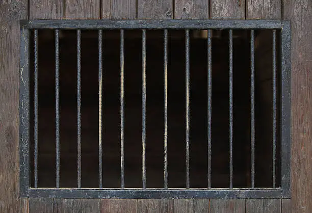
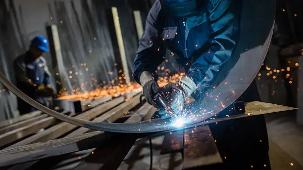
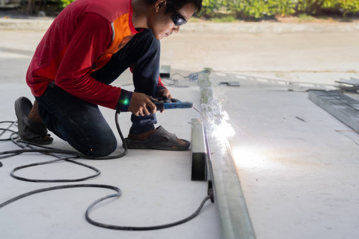

Portões de Ferro Sob Medida
Portões exclusivos para residências e empresas, com alta durabilidade.
Atendemos com qualidade artesanal e padrão profissional em cada projeto.
Portões exclusivos para residências e empresas, com alta durabilidade.

Proteção reforçada sem comprometer estética e ventilação do ambiente.

Projetos para obras civis e industriais, com foco em resistência estrutural.

Recuperação, solda e reforço para prolongar a vida útil de estruturas metálicas.